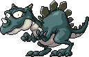

Lv. 50 · #5130100
드레이크
던전 아주 깊은 곳에는 전용 밥상까지 만들어 놓고 모험자들을 사냥하는 무시무시한 용족이다. 하지만 진정한 용족이라고 하기에 지능이 낮다. 멍청해 보여도 무리를 지어 생활하기 때문에 한번 실수로 드레이크들에게 둘러 쌓이면 왠만한 모험자들은 손 한 번 제대로 써보지 못하고 비석을 세우게 된다.
스탯
레벨 50- HP
- 3,200
- MP
- 100
- EXP
- 135
- 넉백 가능 데미지
- 500+
- 물리 데미지
- 165
- 마법 데미지
- 0
- 물리 방어력
- 110
- 마법 방어력
- 150
- 속도
- -10
- 50레벨 에서의 필요 명중
- 65.988
- 메소
- 375.0
- 속성관계
- 미기재
- 체경비
- 23.70
- 형태
- 파충류형
출현 지역
출현 맵 5개맵 이름을 누르면 메이플노트의 맵 정보가 열립니다.
드롭 테이블
전체 34개| 아이템 | 아이템 ID | 드롭 확률 |
|---|---|---|
| 드레이크의 머리뼈 | 4000014 | 60% |
| 용의 가죽 | 4000030 | 7% |
| 하얀 포션 | 2000002 | 2% |
| 전사의 물약 | 2002004 | 0.7% |
| 드레이크의 피 | 2012000 | 0.7% |
| 드레이크의 고기 | 2012003 | 0.7% |
| 속도향상의 물약 | 2002001 | 0.5% |
| 은의 원석 | 4010004 | 0.5% |
| 엘릭서 | 2000004 | 0.2% |
| 금의 원석 | 4010006 | 0.2% |
| 다이아몬드의 원석 | 4020007 | 0.1% |
| 금비 표창 | 2070003 | 0.06% |
| 마법의 가루(갈색) | 4007000 | 0.03% |
| 마법의 가루(파랑) | 4007002 | 0.03% |
| 버드빌 | 1412005 | 0.01% |
| 그린 하프슈즈 | 1072108 | 0.01% |
| 한손둔기 제작의 촉진제 | 4130004 | 0.01% |
| 폴암 제작의 촉진제 | 4130009 | 0.01% |
| 아대 제작의 촉진제 | 4130015 | 0.01% |
| 골드 문슈즈 | 1072116 | 0.01% |
| 제코 | 1432005 | 0.01% |
| 발터2000 | 1452007 | 0.01% |
| 냄비 뚜껑 | 1092008 | 0.008% |
| 사파이어 귀고리 | 1032002 | 0.008% |
| 다크 칼라프 | 1051030 | 0.007% |
| 블루 루이마리 | 1051037 | 0.007% |
| 엄버 숄더메일 | 1040089 | 0.007% |
| 엄버 숄더메일 바지 | 1060078 | 0.007% |
| 자월 | 1041077 | 0.007% |
| 자월 바지 | 1061076 | 0.007% |
| 다크 윌로우 | 1082083 | 0.007% |
| 쏜즈 | 1382006 | 0.007% |
| 이글크로 | 1462004 | 0.004% |
| 브라운레더 오션 햇 | 1002631 | 0.0015% |
조건에 맞는 드롭 아이템이 없습니다.
확률은 메이플노트에 게시된 값입니다. 아이템 이름을 누르면 원본 아이템 정보가 열립니다. 과거 버전 데이터이므로 실제 메이플랜드와 다를 수 있습니다.